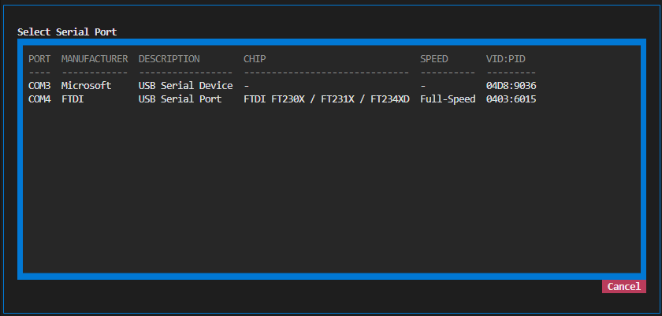
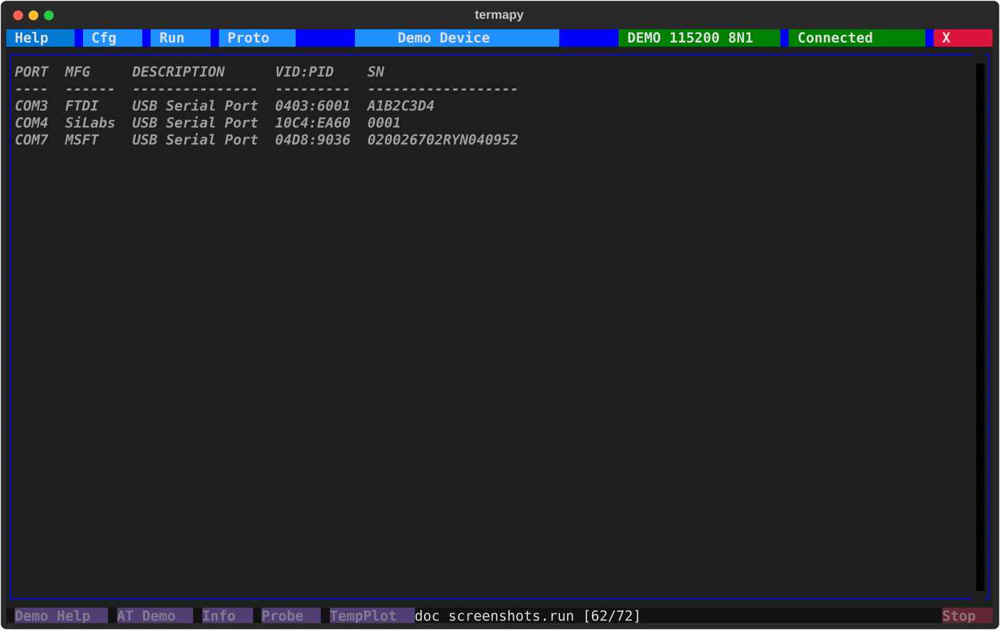
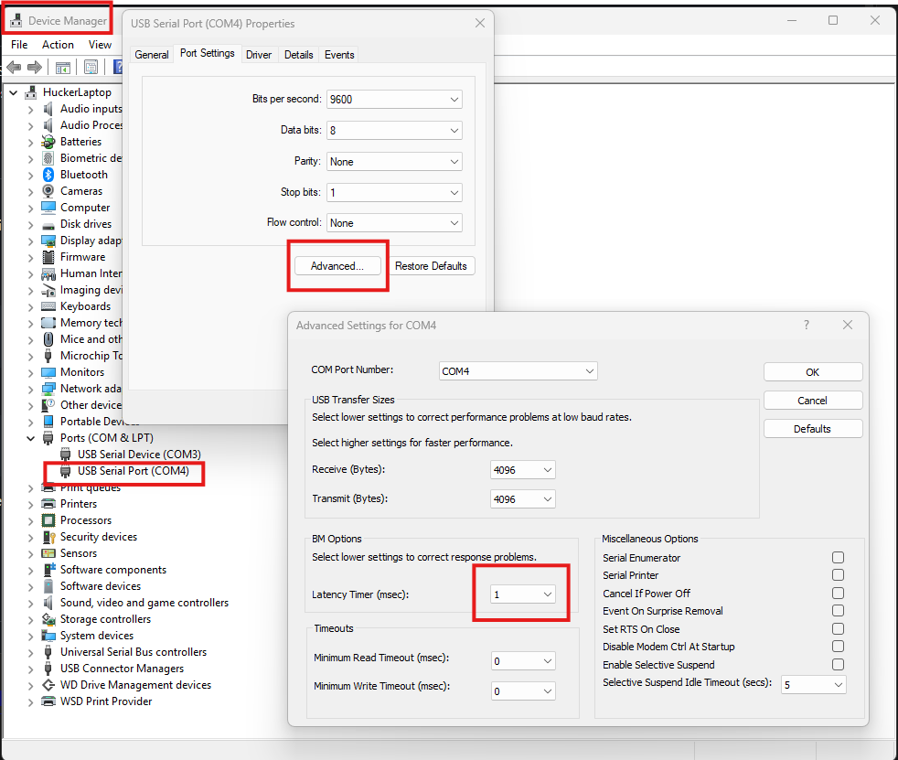

Serial ports¶
Most of the time, connecting to a serial device takes about 10 seconds of thinking:
- Plug in the cable.
- Click the port name in the title bar (top-right), pick your port from
the list. It's usually obvious which one is yours: your FTDI cable
says
FTDI, your Arduino saysArduino. - If your device needs something other than 115200 8N1 no-flow-control, click Cfg and change it. Most modern devices don't.
- Click Connect.
That's it. You're talking to your device. The rest of this page is for the times something weird happens: a cable that doesn't work, a latency problem, a chip you don't recognize, a "permission denied" error. Skim the rest so you know it's here, then come back when you're stuck.

When you hit a wall¶
The port picker, /port.info, /port.chip, and termapy --info all
surface the same underlying data: what USB chip is in the cable, what
USB speed class it runs at, who made it, and what its raw USB identifier
is. Use whichever entry point is convenient:
| Where | Command | What you get |
|---|---|---|
| Title bar click | (no command) | Port picker dialog with a table of every port |
| Inside termapy | /port or /port.list |
Same chip-aware table, printed to terminal |
| Inside termapy | /port.info |
Full details for the currently-connected port |
| Inside termapy | /port.chip <name> or * |
Chip details for any named port, or all ports |
| Inside termapy | /port.chip.<field> |
One field (e.g. /port.chip.driver COM4) |
| Shell | termapy --ports |
Same chip-aware table, no TUI |
| Shell | termapy --info |
Same as /port.chip *, no TUI, pipe-friendly |
| Shell | termapy --info=COM4 |
Same as /port.chip COM4, no TUI |

When you have multiple cables and don't know which is which¶
Open the port picker (click the port name in the title bar) or run
/port.chip *. The list shows manufacturer, description, chip model,
USB speed class, and VID:PID for every connected port. The manufacturer
column is usually enough to disambiguate: FTDI for FTDI cables,
Microsoft for a generic Microsoft CDC device, Teensy for a Teensy,
and so on.
The picker also auto-refreshes about once a second while it's open. Plug your device in and watch the new row appear (or unplug and watch one disappear) to identify which COM port belongs to which physical device — no need to close and re-open. The Quick Setup dialog (used when creating a new config) refreshes the same way.
Reading the LOCATION and IF columns¶
Location is where the device is plugged in, not what it is, so it is
the one field that survives a firmware reflash, a serial-number change,
or a COM renumber. It reads bus-port, with a dot per hub tier:
LOCATION IF
1-8.2 bus 1, root-hub port 8, then port 2 of the hub plugged in there
1-8.3 same hub, next port along
1-8.4 1 same hub again -- and this port is function 1 of that device
Ports sharing a 1-8. prefix are on the same physical hub, and moving a
cable to a different socket changes the number.
IF is the USB interface, and it is empty for most devices. It fills in only when one physical device exposes more than one function and the location alone would be ambiguous -- a debugger with a serial port alongside it, or a multi-channel chip like an FT4232 whose four ports all share one location. If no connected device is like that, the column isn't shown at all.
This is the same notation pyserial reports on Linux and macOS, with one wrinkle: FTDI's Windows driver hides the topology from the port itself, so termapy reads it from the parent USB device instead. Without that, every FTDI port on Windows shows a blank location.
Seeing the whole bus: /port.usb¶
/port.list shows serial ports and nothing else, on purpose -- a listing
that included keyboards and webcams would stop being a port listing.
When you need the other view, /port.usb (or termapy --usb) draws the
entire USB tree and marks the nodes that carry a serial port:
1 USB Root Hub (USB 3.0) USBHUB3
+-- 1-8 Generic USB Hub 2109:2817 USBHUB3
| +-- 1-8.2 USB Serial Converter 0403:6001 FTDIBUS -> COM7
| +-- 1-8.3 USB Serial Converter 0403:6015 FTDIBUS -> COM4
| `-- 1-8.4 USB Composite Device 04D8:9036 usbccgp
| +-- :0 MPLAB PICkit5 In-Circuit Debugger WINUSB
| `-- :1 USB Serial Device usbser -> COM3
`-- 1-10 Intel(R) Wireless Bluetooth(R) 8087:0026
That answers questions the port table can't. All three adapters are on one hub. COM3 isn't a serial adapter at all -- it's the CDC function of a PICkit debugger, sharing a device with the debug interface. And if a port vanishes, the tree shows whether the hub is still there.
A :N child is interface N of the device above it, not another hub
tier. That distinction is why it's drawn as a child rather than spelled
into the path: . already means "one tier deeper", so 1-8.4.1 is a
device plugged into a hub at 1-8.4, and writing an interface that way
would claim a hub exists where there isn't one.
termapy --usb --json emits the same tree as nested records for
scripting. Windows and Linux only; macOS reports that it isn't
supported rather than printing an empty tree, which would read as "no
devices".
The bundled USB vendor database¶
Termapy ships the full canonical USB vendor table — more than
3,400 vendor IDs from the usb.ids
upstream — so the manufacturer column on the port picker recognizes
every assigned vendor, not just the popular ones. A separate
hand-curated table covers the common USB-serial bridge chips (FTDI,
Silicon Labs, WCH / CH340-CH341, Microchip, Prolific, CP210x, etc.)
with datasheet-sourced model name, USB speed class (full vs high),
and the maximum baud rate the chip silicon supports. That data
fills the Chip column the picker shows and the max-baud value in
/port.info.
The bundled snapshot ships with each termapy release. If you want
a fresher one, upgrade termapy through the normal channel
(uv tool upgrade termapy or pip install -U termapy) — termapy's
built-in update checker will surface the prompt when a newer
release is available.
When your serial link feels laggy (Linux + FTDI)¶
FTDI chips buffer incoming bytes for up to 16 ms before pushing them upstream, because of a chip-level policy called the latency timer. The default value is 16 ms; the effective range is 1-255 ms. For interactive terminal use this is usually fine. For anything measuring reaction time, round-trip latency, or real-time control, it's the single biggest thing you can fix.
On Linux, read and set it via sysfs:
cat /sys/bus/usb-serial/devices/ttyUSB0/latency_timer # read
echo 1 | sudo tee /sys/bus/usb-serial/devices/ttyUSB0/latency_timer # set to 1 ms
To make it permanent across plug-unplug cycles, add a udev rule:
# /etc/udev/rules.d/99-ftdi-latency.rules
ACTION=="add", SUBSYSTEM=="usb-serial", DRIVERS=="ftdi_sio", ATTR{latency_timer}="1"
On Windows: Device Manager → Ports (COM & LPT) → right-click the FTDI device → Properties → Port Settings → Advanced → set "Latency Timer (msec)" to 1. The change is persistent across reboots.

/port.chip.latency_timer shows the current value on Linux (Windows
doesn't expose it via the same path).
When you're evaluating whether to buy a faster cable¶
USB-serial chips come in two speed classes:
- USB Full-Speed (12 Mbit/s) has a 1 ms minimum USB transaction floor. Most cheap cables: FTDI FT232R, FT230X, Silicon Labs CP2102, WCH CH340, Prolific PL2303. Fine for terminal use, max practical baud rate around 3 Mbaud.
- USB High-Speed (480 Mbit/s) has a 125 µs minimum USB transaction floor, 8x faster. Specifically the FTDI "H" series: FT232H, FT2232H, FT4232H, FT4232HP. Fine for high-speed debug output, max baud rate up to 12 Mbaud.
The speed difference only matters if you're pushing more than ~1 Mbit/s of serial data, or if you need sub-millisecond round-trip latency for real-time control. For a shell or debug console, both classes feel identical.
When a chip shows "unknown"¶
Termapy has a curated lookup table of known USB-serial chips by VID:PID.
If your chip isn't in it, /port.chip reports model: unknown and
usb_speed: unknown (chip not in lookup table) — the port still works,
you just don't get the model name, speed class, or max-baud. The VID:PID
is printed so you can identify the chip manually against the USB-IF
database (https://github.com/usbids/usbids, or the web lookup at
https://the-sz.com/products/usbid/).
Why termapy carries this. A chip's USB speed class and datasheet max-baud aren't reported by pyserial — it surfaces the port, not the silicon behind it — and they aren't in the public USB-IF vendor registry either; they come from datasheets. This would ideally live in pyserial itself, but it is no longer actively maintained, so termapy keeps its own small curated table rather than fork it.
Adding a chip. The table is a plain Python dict in
src/termapy/usb/chips.py (USB_SERIAL_CHIPS), keyed by (VID, PID).
Each entry is one line — the model name, USB speed class ("full" or
"high"), and datasheet max baud:
Add the line (a pull request is welcome, or open an issue with the VID:PID
and chip model) and termapy identifies that chip from then on. A
max_baud of 0 marks a non-UART device (bootloader, HID, etc.).
When you hit "In use" and can't connect¶
/port.info and /port.chip.in_use report whether another process has
the port open. Termapy's own connection counts as "in use," so if you
see yes while termapy is connected, that's expected. This is handy
when a port is held by something with no visible window -- for example an
MCP server (termapy --mcp) running in the background.
How in-use is detected, and why it's on-demand. Detecting in-use means asking "can this port be opened?", and opening a serial port asserts DTR/RTS -- which resets Arduino/ESP32 boards wired for auto-reset. So termapy never opens a port you didn't ask about:
- Listing and connecting never open bystander ports.
/port.list, plaintermapy --ports, the port picker, and resolving a config's port (including the auto-reconnect loop) open nothing at all. The three listing surfaces do still read driver and location -- those come from sysfs on Linux and the registry on Windows, which costs a few milliseconds per port and opens no device. Resolution and the reconnect loop skip even that: they match on device name and serial number, so there is nothing else to look up. - Linux / macOS: in-use is read from
lsof-- it inspects the kernel's open-file table without opening the port, so it is always safe and it names the holder (e.g.yes (python (PID 8842)), i.e. that MCP server). It appears in/port.info,/port.chip.in_use,termapy --ports --json, and live intermapy --watch. - Windows: there is no non-invasive equivalent, so in-use is shown
only on explicit request (
/port.info,/port.chip.in_use,--ports --json) and the probe opens the port briefly with DTR/RTS held de-asserted to minimize disturbance.--watchtherefore shows presence and identity but not in-use on Windows (it will not strobe DTR several times a second).
If you see yes when termapy is not connected, something else has the
handle:
- On Linux:
lsof /dev/ttyUSB0tells you which process (this is exactly what/port.infouses). - On Windows: Task Manager → Details tab → enable the "Handles" column, or use Process Explorer from Sysinternals.
Common culprits: a previous termapy session that didn't clean up, an MCP server still running, another terminal app (PuTTY, Tera Term, Arduino IDE, the Arduino Serial Monitor), a vendor-supplied serial monitor or flashing tool, or occasionally a Windows service that claims COM ports silently.
When you hit "Permission denied" on Linux¶
Your user needs to be in the dialout group (Debian/Ubuntu) or uucp
group (Arch/Fedora). Add yourself and log out / back in:
/port.chip.permissions reports ok or denied for each port so you
can tell ahead of time whether you'll be able to open it.
When your COM number keeps changing¶
Windows usually remembers each USB-serial cable by its serial number and sticks it on the same COM port every time -- but this falls apart for cheap CH340 / PL-2303 / generic CP2102 clones that don't have a real serial number burned in. Those get keyed by hub port path instead, and the COM number moves every time you plug into a different port, unplug another cable, or reboot.
On macOS and Linux the story is worse: /dev/cu.usbserial-* and
/dev/ttyUSB* paths change routinely.
The fix: identify the cable by its USB serial number, not by its
device name. Termapy supports this in the port config field:
Find the serial number with termapy --ports (it's the rightmost
column) or /port.chip. At connect time, termapy scans every
connected serial port and opens the one whose SN matches. Stable
across replugs, stable across machines, stable across reboots.
Fallback chain¶
A |-separated spec tries each candidate in order; first to resolve
wins:
Means "prefer serial number A1B2C3D4; if it's not plugged in, fall back to literal COM3." Useful when you have a preferred cable at your desk but want the config to still find something when you're traveling with a different one.
Works for chips without serial numbers too -- just make sure the first candidate that will match your primary setup comes first:
Composes with environment variables¶
The env-expansion syntax ($(env.NAME|fallback)) and the
port-resolution fallback (|) layer cleanly:
DEVICE_SN gets expanded first (yielding e.g. A1B2C3D4), then the
result is passed to port resolution which handles the pipe. Each
developer on the team can export their cable's SN in their shell
profile; the committed config file has a sane literal fallback so a
fresh clone Just Works on someone's machine.
Ambiguity is a hard error¶
If you ask for serial number 0001 (common on cheap clones) and
termapy sees two connected devices both claiming that SN, it refuses
to open and tells you which devices collided. Disambiguate with a
COM name or a fallback chain -- never silently pick a guess.
When resolution happens, termapy tells you¶
After a successful connect using a non-literal spec, termapy prints one extra line to the screen:
Resolved A1B2C3D4|COM3 -> COM4 (serial number matched A1B2C3D4)
Connected: COM4 115200 8N1 DTR=1 RTS=1 CTS=1 DSR=1 RI=0 CD=1
No surprise: you see the spec you wrote and the device you got.
/port.info adds a [resolved from <spec>] annotation on the
Port: line for the same reason. The title bar stays the way it
always has: the actual device name, never the SN -- users think in
COM numbers.
What doesn't change¶
"port": "COM3"still works. Literal port names are unchanged./port COM7from the REPL still works and now accepts SNs too./port <X>only mutates the session; it never writes to disk. Persisting a new SN means editing the config file (through the/cfgdialog or directly), same as any other config value.
Advanced: URL-style ports¶
Termapy supports every port format pyserial accepts, including:
loop://-- in-process loopback (what you write comes back, useful for testing)socket://host:port-- raw TCPrfc2217://host:port-- network serial over RFC 2217 (ser2net, etc.)hwgrep://regex-- find by device descriptionspy://...-- packet capture wrapper
Just put the URL in the port config field. See pyserial's URL handler
docs for
the full list.
Loopback¶
loop:// is worth calling out: it echoes whatever you write straight back,
so it exercises the real serial read/write path with no hardware. That
makes it handy both interactively (to sanity-check the app) and in CI.
- In the port picker it always appears as a selectable Pyserial
Loopback row (below any real ports) -- pick it like any device. It has
no VID/serial/chip, so those columns show
?, because a loopback isn't a USB device. - In CI set
"port": "loop://"in a config and drive it headlessly: a test that writes a line and expects the same bytes back needs no device.
It differs from --demo: the demo simulates a device that responds
(request in, reply out), whereas the loopback is a raw round-trip (bytes in,
same bytes out). Use the loopback to test the I/O plumbing, the demo to test
device conversations.